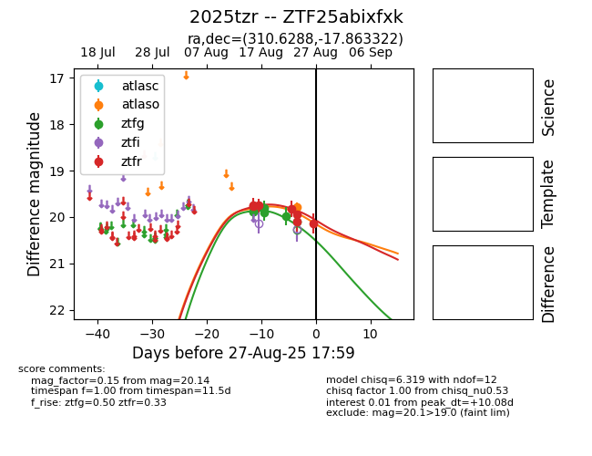

Target 2025tzr at 2025-08-27 17:59, see:
FINK: fink-portal.org/ZTF25abixfxk
Lasair: lasair-ztf.lsst.ac.uk/objects/ZTF25abixfxk
ALeRCE: alerce.online/object/ZTF25abixfxk
TNS: wis-tns.org/object/2025tzr
YSE: ziggy.ucolick.org/yse/transient_detail/2025tzr
alt names
ZTF25abixfxk (ztf,fink)
2025tzr (tns,yse)
coordinates:
equatorial (ra, dec) = (310.6288,-17.86332)
galactic (l, b) = (28.1268,-32.31262)
photometry
last atlaso=19.78, ztfg=19.99, ztfr=20.14
1 atlaso, 5 ztfg, 7 ztfr detections
